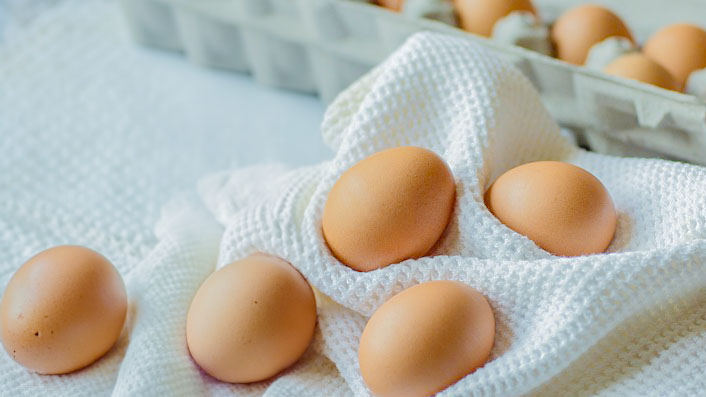
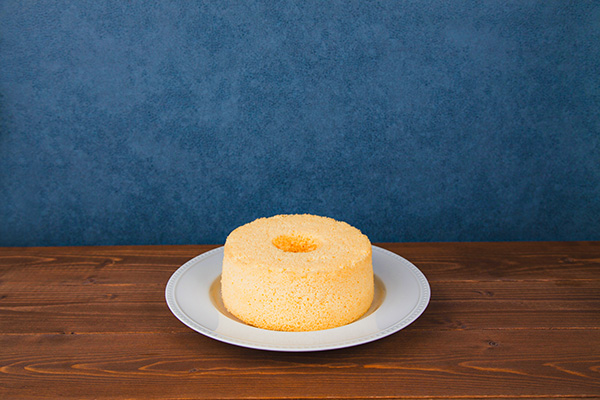
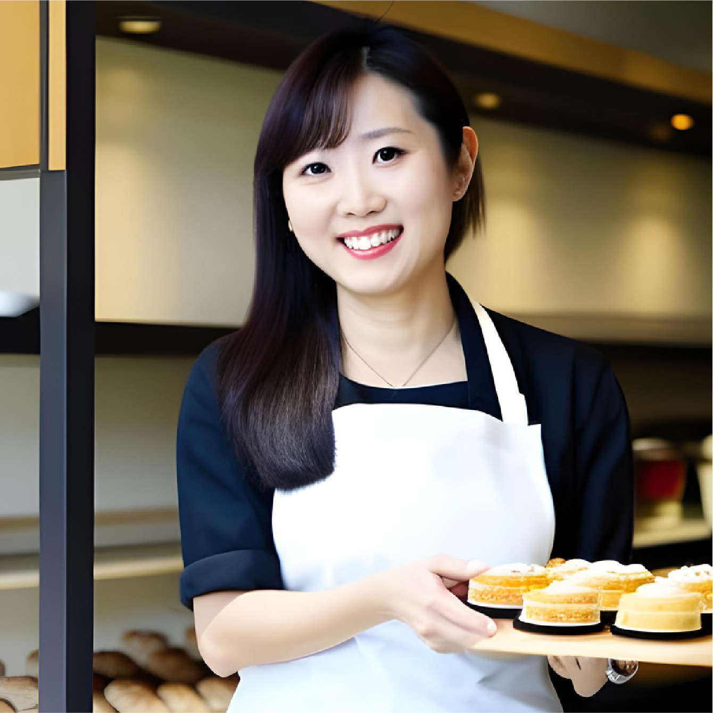

Enroulez-le doucement comme de la soie
CONCEPT
コンセプト
" 絹のように優しく包むシフォンケーキ "
パティスリー・ソワはひとつ一つ一つ丁寧に
心をこめて手作りし、
「絹のようなやさしい口どけ」
にこだわった小さなシフォンケーキ専門店
さらに、無添加素材を使用し、
体にも優しく、小さなお子様でも
美味しく食べられるようになっております。
ESSENCE
素材のこだわり

使用する素材はすべて国産品を扱っており、
地元の農家から仕入れた小麦や卵、
果物を使用しております。
ふっくらと口あたりのいい生地や、
砂糖を控えめにし、自然の甘みを引き出すことで、
本来の甘さをかんじていただける
シフォンケーキをお愉しみください。
PICK UP
ピックアップ商品
SEASON

POPULAR
OWNER
オーナー

Kosuzu Rinko
小鈴 凛子
一口でほっこり、やさしさが広がる シフォンケーキを届けたい
- 2007年
- 大阪調理製菓専門学校を卒業後、
東京都内の洋菓子店に就職
- 2013年
- 本場のフランス菓子を学ぶため渡米し、
フランス・パリのパティスリーにて修行
- 2021年
- 帰国後、南青山のレストランに勤務する傍ら、
個人でお菓子教室をオープン
- 2023年
- シフォンケーキ専門店を「Soie」オープン
- 2023年
- 第１１回焼き菓子コンテスト
-Premium Quality Cup 2023 優秀賞受賞
ACCESS
店舗案内
patisserie Soie
| 住所 | 〒550-0014 大阪府大阪市西区北堀江1丁目15-9 |
|---|---|
| 電話番号 | 080-1234-5678 |
| 営業時間 | 11:00～18:00 |
| 定休日 | 水曜日、第３月曜日 |
最寄駅
- OsakaMetro四つ橋線「四ツ橋」
６番出口より徒歩２分 - OsakaMetro長堀鶴見緑地線「西大橋」駅
４番出口より徒歩３分 - OsakaMetro御堂筋線「心斎橋」駅
7番出口より徒歩７分